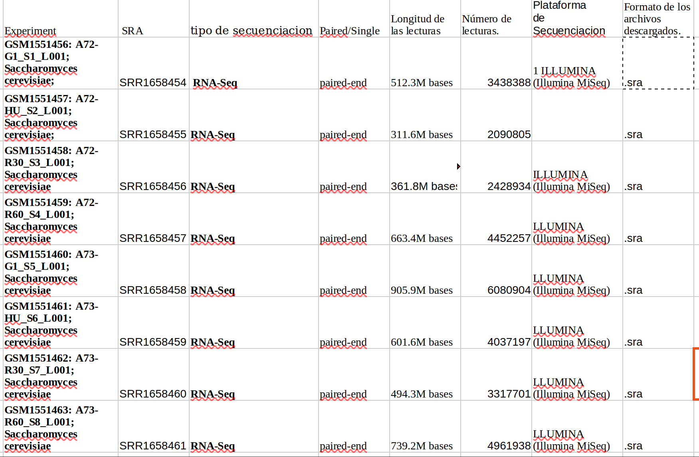

reporte tercera parte examen
Introducción: El organismo que se estudio fue “Saccharomuces cerevisiae” (Eukaryota; Fungi; Dikarya) con codigo de identificacion.
Contexto biológico: PRJNA268110, GEO: GSE63516 (levadura de panadería), un organismo modelo ampliamente utilizado en biología molecular y genética.
Objetivo del estudio: El objetivo del estudio fue analizar… datos de secuenciación de RNA (RNA-Seq).a traves del estudio a manos de: Wenyi Feng, Bioquímica y Biología Molecular, Universidad Médica del Norte del Suny. Genome Res, 2015 Mar;25(3):402-12.
con el fin de: revelar la fragilidad cromosómica inducida por hidroxiurea como resultado de un conflicto no programado entre la replicación y la transcripción del ADN.
Datos y metodología
Fuentes de datos. Los datos estan disponibles en bases de datos pblicas como NCBi en donde podemos encontrarlo buscando:PRJNA268110

- BioProject/BioSample/SRA:
### A. BioProject (
PRJNA...)Representa el proyecto de investigación completo.
Por ejemplo, un grupo de investigación quiere estudiar la expresión génica de una bacteria bajo distintas condiciones ambientales. El BioProject reúne la información general de ese estudio y relaciona los registros asociados.
Pregunta que responde: ¿A qué proyecto de investigación pertenecen estos datos?
### B. BioSample (
SAMN...)Representa una muestra biológica específica utilizada en el estudio.
Por ejemplo, un investigador obtiene muestras de una bacteria cultivada en dos condiciones diferentes. Cada muestra puede tener su propio registro BioSample.
Pregunta que responde: ¿Qué material biológico se estudió?
### C. SRA Experiment (
SRX...)Describe el experimento de secuenciación asociado a una muestra.
Incluye información técnica sobre cómo se preparó y secuenció la muestra, como la estrategia de secuenciación, el diseño de la biblioteca y la plataforma utilizada.
Una misma muestra biológica puede estar asociada con varios experimentos si se realizan diferentes procedimientos de secuenciación.
Pregunta que responde: ¿Cómo se diseñó y realizó el experimento de secuenciación?
### D. SRA Run (
SRR...)Representa una ejecución de secuenciación que genera datos de lecturas.
Es especialmente importante en bioinformática porque los datos de las lecturas crudas se pueden recuperar desde los registros SRA Run.
Datos descargados: # modulo: $module load sra/3.1.1 #Descarga: $prefetch SRR1658454 SRR1658455 SRR1658456 SRR1658457 SRR1658458 SRR1658459 SRR1658460 SRR1658461
#Conversión a FASTQ: $fasterq-dump SRR1658454 SRR1658455 SRR1658456 SRR1658457 SRR1658458 SRR1658459 SRR1658460 SRR1658461
#Número de archivos descargados: $find . -maxdepth 1 -type f -name “.fastq” | wc -l #Tamaño de los archivos: $ du -h SRR.fastq #Numero de secuencias: awk ‘END {print “Numero de lecturas:”, NR/4}’ SRR1658454_1.fastq awk ‘END {print “Numero de lecturas:”, NR/4}’ SRR1658454_2.fastq awk ‘END {print “Numero de lecturas:”, NR/4}’ SRR1658455_1.fastq awk ‘END {print “Numero de lecturas:”, NR/4}’ SRR1658455_2.fastq awk ‘END {print “Numero de lecturas:”, NR/4}’ SRR1658456_1.fastq awk ‘END {print “Numero de lecturas:”, NR/4}’ SRR1658456_2.fastq awk ‘END {print “Numero de lecturas:”, NR/4}’ SRR1658457_1.fastq awk ‘END {print “Numero de lecturas:”, NR/4}’ SRR1658457_2.fastq awk ‘END {print “Numero de lecturas:”, NR/4}’ SRR1658458_1.fastq awk ‘END {print “Numero de lecturas:”, NR/4}’ SRR1658458_2.fastq awk ‘END {print “Numero de lecturas:”, NR/4}’ SRR1658459_1.fastq awk ‘END {print “Numero de lecturas:”, NR/4}’ SRR1658459_2.fastq awk ‘END {print “Numero de lecturas:”, NR/4}’ SRR1658460_1.fastq awk ‘END {print “Numero de lecturas:”, NR/4}’ SRR1658460_2.fastq awk ‘END {print “Numero de lecturas:”, NR/4}’ SRR1658461_1.fastq awk ‘END {print “Numero de lecturas:”, NR/4}’ SRR1658461_2.fastq
#Longitud promedio de las lecturas: $ awk ‘FNR % 4 == 2 { longitud = length($0) total[FILENAME]++ bases[FILENAME] += longitud } END { for (archivo in total) printf “%s: %dpromedio: %.2f nt”, archivo, total[archivo], bases[archivo]/total[archivo] }’ SRR*.fastq | sort
#Lecturas son paired-end o single-end: $ awk ‘END {print “R1:”, NR/4}’ SRR1658454_1.fastq $ awk ‘END {print “R2:”, NR/4}’ SRR1658454_2.fastq $ awk ‘END {print “R1:”, NR/4}’ SRR1658455_1.fastq $ awk ‘END {print “R2:”, NR/4}’ SRR1658455_2.fastq $ awk ‘END {print “R1:”, NR/4}’ SRR1658456_1.fastq $ awk ‘END {print “R2:”, NR/4}’ SRR1658456_2.fastq $ awk ‘END {print “R1:”, NR/4}’ SRR1658457_1.fastq $ awk ‘END {print “R2:”, NR/4}’ SRR1658457_2.fastq $ awk ‘END {print “R1:”, NR/4}’ SRR1658458_1.fastq $ awk ‘END {print “R2:”, NR/4}’ SRR1658458_2.fastq $ awk ‘END {print “R1:”, NR/4}’ SRR1658459_1.fastq $ awk ‘END {print “R2:”, NR/4}’ SRR1658459_2.fastq $ awk ‘END {print “R1:”, NR/4}’ SRR1658460_1.fastq $ awk ‘END {print “R2:”, NR/4}’ SRR1658460_2.fastq $ awk ‘END {print “R1:”, NR/4}’ SRR1658461_1.fastq $ awk ‘END {print “R2:”, NR/4}’ SRR1658461_2.fastq
#Mostrar secuencia cruda: head -n 4 SRR1658454_1.fastq
primera: Identificador de la lectura y, según el formato, información adicional. Segunda: Secuencia de nucleótidos leída por el secuenciador. Tercera: Separador entre la secuencia y las puntuaciones de calidad puede incluir información adicional. Cuarta: Puntuaciones de calidad codificadas como caracteres ASCII, una por cada base de la secuencia. 4. Cuantificación y exploración básica #Cargar el modulo: $ module load module load fastqc/0.11.3 $ fastqc *.fastq
Corridas SRA | 8 |
Archivos FASTQ | 16 |
Reads en R1 | 30,808,124 |
Reads en R2 | 30,808,124 |
Total de reads individuales | 61,616,248 |
Total de pares de lecturas | 30,808,124 |
$awk ‘END {print “Total de lecturas individuales:”, NR/4}’ SRR*.fastq
Obtener la longitud de las lecturas:
$ awk ‘FNR % 4 == 2 {total++; bases += length($0)} END {printf “Lecturas: %dpromedio: %.2f nt”, total, bases/total}’ SRR1658454_1.fastq
-Resultados: #Descargas: SRR1658454.sra SRR1658455.sra SRR1658456.sra SRR1658457.sra SRR1658458.sra SRR1658459.sra SRR1658460.sra SRR1658461.sra
#Conversión a FASTQ: SRR1658454_1.fastq SRR1658454_2.fastq SRR1658455_1.fastq SRR1658455_2.fastq SRR1658456_1.fastq SRR1658456_2.fastq SRR1658457_1.fastq SRR1658457_2.fastq SRR1658458_1.fastq SRR1658458_2.fastq SRR1658459_1.fastq SRR1658459_2.fastq SRR1658460_1.fastq SRR1658460_2.fastq SRR1658461_1.fastq SRR1658461_2.fastq
#Tamaño de los archivos:
741M SRR1658454_1.fastq 740M SRR1658454_2.fastq 449M SRR1658455_1.fastq 449M SRR1658455_2.fastq 522M SRR1658456_1.fastq 522M SRR1658456_2.fastq 960M SRR1658457_1.fastq 960M SRR1658457_2.fastq 1.3G SRR1658458_1.fastq 1.3G SRR1658458_2.fastq 870M SRR1658459_1.fastq 870M SRR1658459_2.fastq 715M SRR1658460_1.fastq 714M SRR1658460_2.fastq 1.1G SRR1658461_1.fastq 1.1G SRR1658461_2.fastq
#Numero de secuencias: Archivo: SRR1658454_1.fastq Lecturas: 3438388 Archivo: SRR1658454_2.fastq Lecturas: 3438388 Archivo: SRR1658455_1.fastq Lecturas: 2090805 Archivo: SRR1658455_2.fastq Lecturas: 2090805 Archivo: SRR1658456_1.fastq Lecturas: 2428934 Archivo: SRR1658456_2.fastq Lecturas: 2428934 Archivo: SRR1658457_1.fastq Lecturas: 4452257 Archivo: SRR1658457_2.fastq Lecturas: 4452257 Archivo: SRR1658458_1.fastq Lecturas: 6080904 Archivo: SRR1658458_2.fastq Lecturas: 6080904 Archivo: SRR1658459_1.fastq Lecturas: 4037197 Archivo: SRR1658459_2.fastq Lecturas: 4037197 Archivo: SRR1658460_1.fastq Lecturas: 3317701 Archivo: SRR1658460_2.fastq Lecturas: 3317701 Archivo: SRR1658461_1.fastq Lecturas: 4961938 Archivo: SRR1658461_2.fastq Lecturas: 4961938
#Longitud promedio de las lecturas:
SRR1658454_1.fastq Lecturas: 3438388 Longitud promedio: 74.53 nt SRR1658454_2.fastq Lecturas: 3438388 Longitud promedio: 74.46 nt SRR1658455_1.fastq Lecturas: 2090805 Longitud promedio: 74.53 nt SRR1658455_2.fastq Lecturas: 2090805 Longitud promedio: 74.48 nt SRR1658456_1.fastq Lecturas: 2428934 Longitud promedio: 74.51 nt SRR1658456_2.fastq Lecturas: 2428934 Longitud promedio: 74.45 nt SRR1658457_1.fastq Lecturas: 4452257 Longitud promedio: 74.53 nt SRR1658457_2.fastq Lecturas: 4452257 Longitud promedio: 74.47 nt SRR1658458_1.fastq Lecturas: 6080904 Longitud promedio: 74.52 nt SRR1658458_2.fastq Lecturas: 6080904 Longitud promedio: 74.45 nt SRR1658459_1.fastq Lecturas: 4037197 Longitud promedio: 74.53 nt SRR1658459_2.fastq Lecturas: 4037197 Longitud promedio: 74.48 nt SRR1658460_1.fastq Lecturas: 3317701 Longitud promedio: 74.53 nt SRR1658460_2.fastq Lecturas: 3317701 Longitud promedio: 74.47 nt SRR1658461_1.fastq Lecturas: 4961938 Longitud promedio: 74.52 nt SRR1658461_2.fastq Lecturas: 4961938 Longitud promedio: 74.46 nt
#Lecturas son paired-end o single-end: R1: 3438388 R2: 3438388 R1: 2090805 R2: 2090805 R1: 2428934 R2: 2428934 R1: 4452257 R2: 4452257 R1: 6080904 R2: 6080904 R1: 4037197 R2: 4037197 R1: 3317701 R2: 3317701 R1: 4961938 R2: 4961938
#Mostrar secuencia cruda:
@SRR1658454.1 1 length=75 CGGGAATTCATCATCAGTCCTTCCCACTAAGTAAACAAGGTGTCTTCATCTCTCAAATACTCACCAATATCTGCT +SRR1658454.1 1 length=75 668–+CFF9FGGGGGGGGGGGGGGGGGGGGGFFDFFGFFG8CFFFF9FFFGFGFAAFFFDF,CFC8F,CCC,<C [agarcia@ken agarcia]$